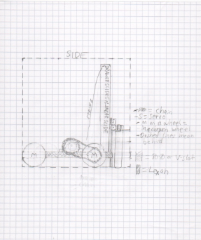
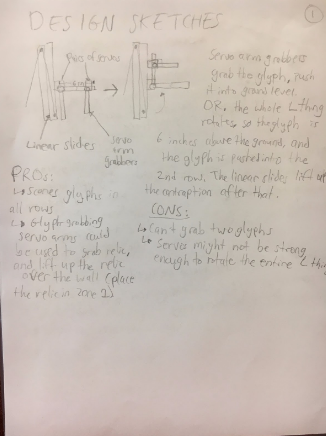
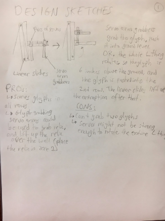

Our Robot
Engineering
Drivetrain and Chassis
Our drivetrain is a standard four-wheel tankdrive, with the wheels chained onto motors mounted on the chassis. Because the motors are placed above the chassis, rather than below it, the robot can maintain a lower center of gravity. However, this poses the problem of not being able to drive onto the balancing stone. This issue was fixed by placing a wedge on the back of the robot, which pushes the stone down while we drive backwards onto it. Our electronics, including the REV Expansion Hubs, are mounted on a sheet of lexan on the underside of the chassis, while the name plates are mounted on the robot's sides.
Acquirer
The acquirer has two mechanisms: the lift and the clamping servos. A servo on either side of the acquirer controls a vertical rod, and turning the servos in opposite directions allows the rods to clamp onto glyphs. The lift, made of drawer slides and attached to a spool of string, can then raise the clamped glyph to score or stack the glyph onto another glyph. If a glyph is stacked on top of another, both glyphs can be picked up at the same time by the clamping rods.
Previous Iteration
A previous version of the acquirer divided the acquirer vertically into two with a door hinge, allowing the acquirer to clamp glyphs using two top servos, raise the hinge, and clamp another glyph using the two bottom servos. However, we realized this process was slow and ineffective, leading us to remove a servo from either side and combining the clampers on each side into one.
Arm
The arm is a square channel connected to a servo at one end, allowing the servo to freely rotate the channel in 180 degrees. The arm has a color sensor mounted at the other end, and its purpose is to detect the color of a jewel during the autonomous period.
Software Engineering
Autonomous
As soon as the kickoff video ended, we knew autonomous scoring was going to play a huge role in this year's game. Using a practice drivetrain as a testing robot, various autonomous routines were written, including a drive straight program using encoders and an IMU, a turn program using an IMU, and a jewel scoring program, which utilized the color sensor on the arm. We also experimented with Vuforia and detecting the VuMark, but the robot was unable to consistently drive to the target cryptobox column to score the glyph.
John Dewey Qualifiers
Our autonomous plan for our first qualifier was to simply score the jewel and park in the Safe Zone. However, during practice, something in the electronics malfunctioned and the color sensor would cause the Expansion Hub to lag during initialization, which made it take up to two minutes for the OpMode to become startable. We were able to solve this problem by removing the color sensor, but we were no longer able to use our jewel autonomous program; instead, we settled for parking in the Safe Zone.
Photos
 
